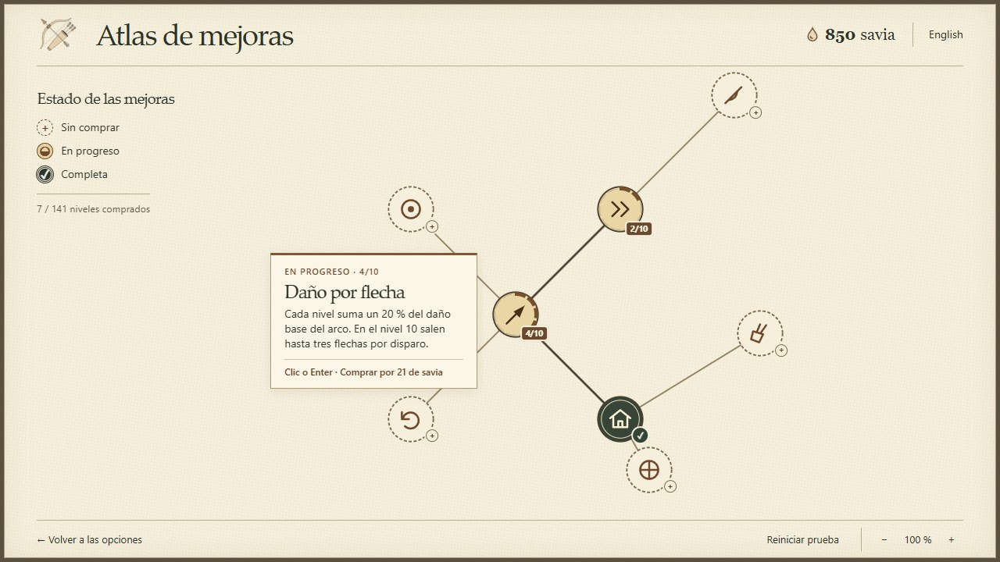
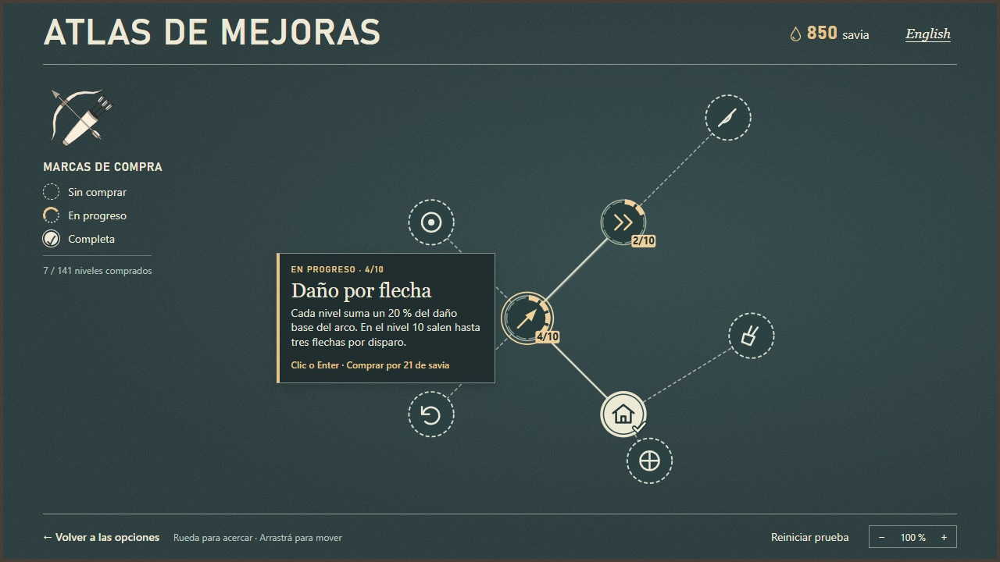
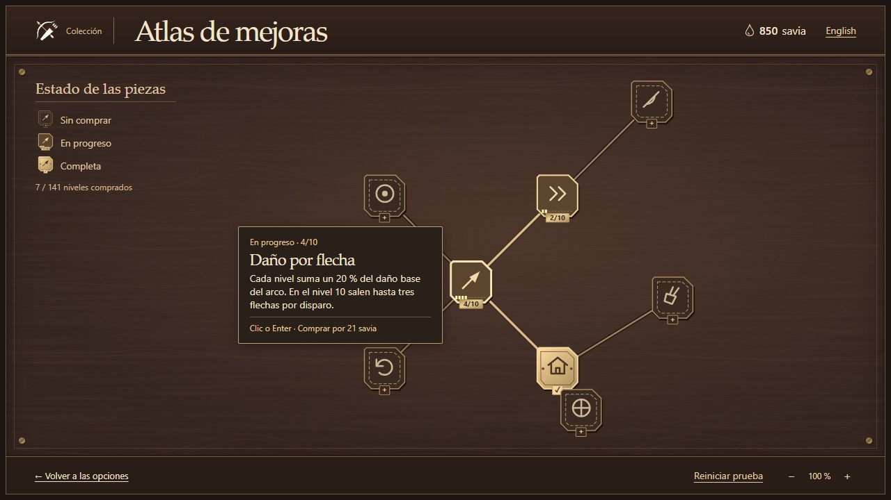

A · Lino y tinta
Sellos sobre papel claro. El relleno indica cuánto compraste.
Probar Lino y tinta →Atlas de Pipo · El arquero del claro

Sellos sobre papel claro. El relleno indica cuánto compraste.
Probar Lino y tinta →
Marcas claras sobre pizarra. Podés seguir una rama sin perder de vista sus conexiones.
Probar Pizarra del claro →
Las piezas sobre madera oscura cambian de acabado a medida que las comprás.
Probar Nogal y latón →Cada estudio empieza con 850 de savia. Enfocá un nodo o pasá el cursor para ver su nivel. Las compras de estos prototipos son simuladas. La animación final del arco A se ve en el juego.